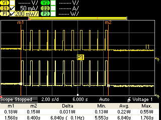
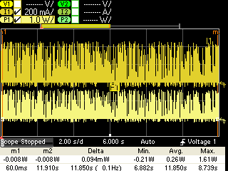
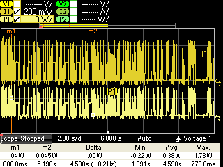
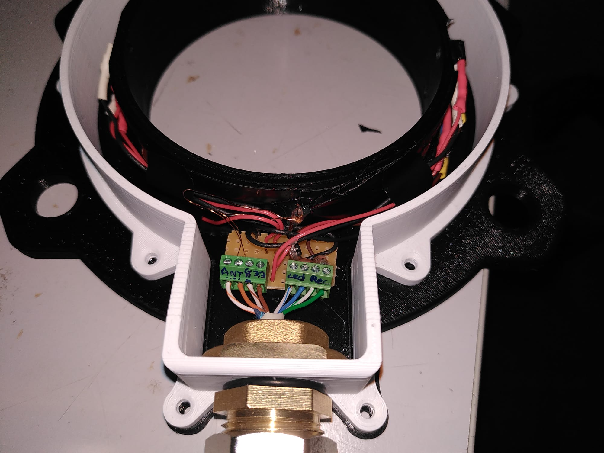
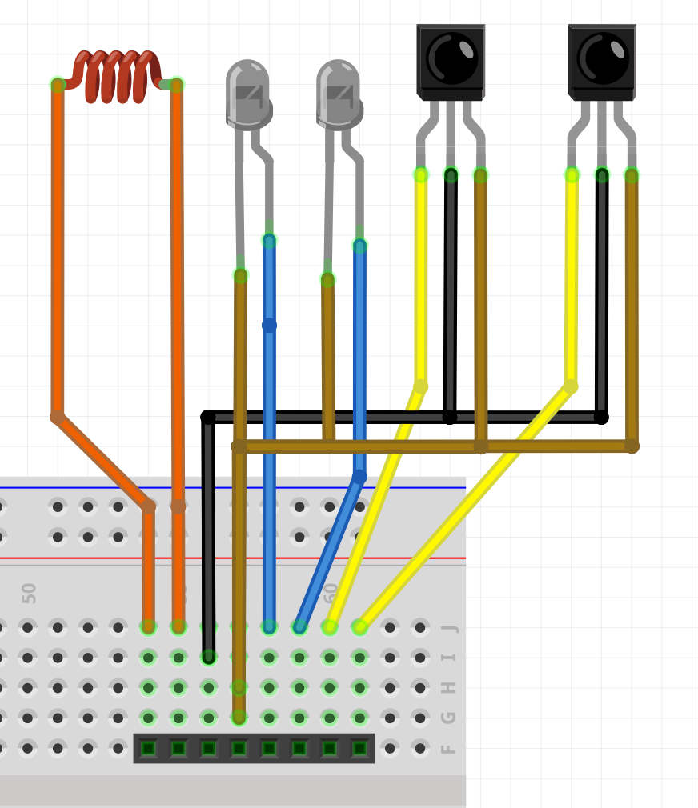
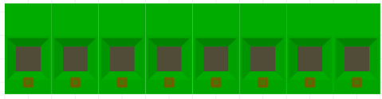
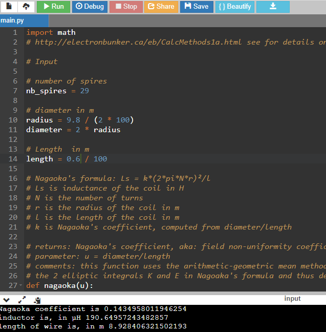
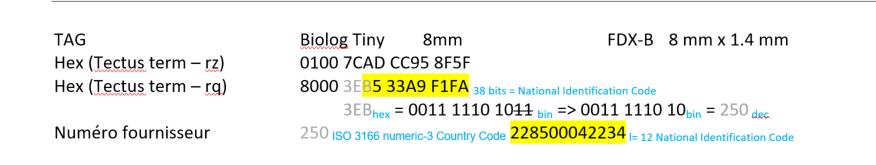

Electronique
Circuit général
Voir wiki sur Gitlab
Consommation
Mesures
Test consommation effectué avec une alimentation programmable (KEYSIGHT N6705C).
Alimentation 5V du Feather M0 + RTC + RFID en acquisition

{width="3.3333333333333335in" height="2.5in"}
Puis test avec l'alim à la place de la batterie en 3.6V branchée sur le PowerBoost
Tout compris RFID au repos

{width="4.395833333333333in" height="3.2968755468066493in"}Tout compris RFID en acquisition

{width="3.3333333333333335in" height="2.5in"}+-----------------------------------+-----------------------------------+ | Carte Feather M0 + RTC | 14mA | +===================================+===================================+ | Carte Tectus + antenne | Allumée au repos : 15mA | | | | | | En acquisition : 100mA sur 150ms | +-----------------------------------+-----------------------------------+ | Système Total* : | 0.18W RFID éteinte | | | | | | 0.26W RFID au repos | | | | | | 0.38W de moyenne en acquisition | | | sur 6.8 secondes (10 lectures | | | RFID) | +-----------------------------------+-----------------------------------+ | * : 2 paires | | | emetteurs/recepteurs IR + Feather | | | Mo + RTC+ Carte RFID + Powerboost | | | 5V | | +-----------------------------------+-----------------------------------+
Calcul Autonomie

Câblage
Antenne Terrier:
Un câble type « ethernet », de 3 paires de fils torsadés, est utilisé pour relié la partie Antenne de la malette étanche.

{width="4.256163604549431in" height="2.96875in"}Vert Récepteur IR 1
Blanc/Vert Récepteur IR 2
Bleu Emetteur IR 1
Blanc/Bleu Emetteur IR 2
Marron 3.3V
Blanc/Marron GND
Orange Antenne +
Blanc/Orange Antenne -
Blindage Câblé au GND

{width="3.6149464129483815in" height="4.186491688538933in"}
{width="1.299271653543307in" height="0.29826662292213474in"}RFID
Calcul Antenne
A partir du script python d'arthur (\\sbgpcs96.in2p3.fr\mibe\Projets\RFID Antennes\Script)
Contrainte : Pour une inductance de 190uH et un diamètre d'environ 98mm

{width="6.3in" height="6.409027777777778in"}Résultat : 29 spires
Carte moyenne Puissance
Dakota 2010-0 TLB-30-BB LF
\Projets\RFID Tectus

{width="6.298611111111111in" height="1.1881944444444446in"}IR module
Exemples/Tuto
-
Comptage par franchissement d'une barrière infrarouge avec Arduino UNO http://makerspace56.org/comptage-par-franchissement-dune-barriere-infrarouge/
-
Youtube la grotte du geek, code écrit par l\'environnement STM32CubeIDE https://www.youtube.com/watch?v=_tcBtZZDsCE
-
Adafruit "Using an Infrared Library on Arduino" https://learn.adafruit.com/using-an-infrared-library/sending-ir-codes
Librairie pour moduler signal IR:
A fast PWM library for SAMD21G-based Arduinos https://github.com/ocrdu/Arduino_SAMD21_turbo_PWM